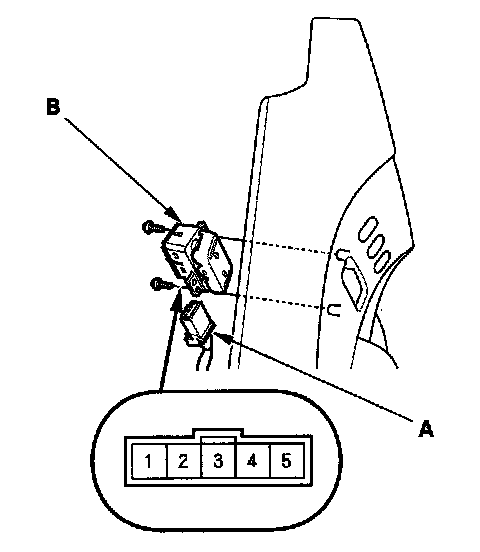

Door Lock Switch Test
Door Lock Switch Test1. Remove the door panel.

2. Disconnect the 5P connector (A), remove the two screws, then remove the door lock switch (B).
3. Check for continuity between the terminals.
- There should be continuity between the No. 5 and No. 4 terminals when the door lock switch is in the LOCK position.
- There should be no continuity between the No. 5 and No. 4 terminals when the door lock switch is in the neutral position or UNLOCK position.
- There should be continuity between the No. 5 and No. 3 terminals when the door lock switch is in the UNLOCK position.
- There should be no continuity between the No. 5 and No. 3 terminals when the door lock switch is in the neutral position or LOCK position.
- There should be continuity between the No. 2, No. 2 (+) and No. 1 ( - ) terminals (bulb check).
4. If the continuity is not as specified, replace the bulb or switch.